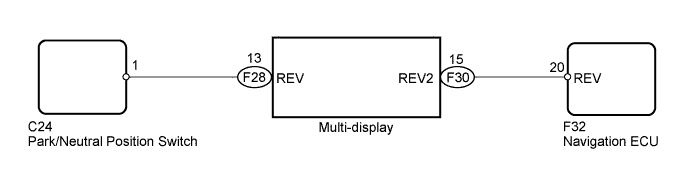
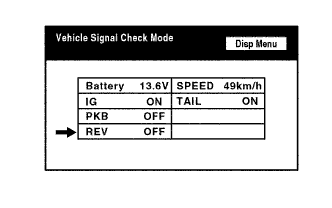
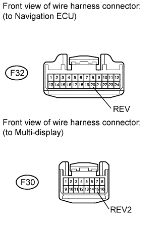
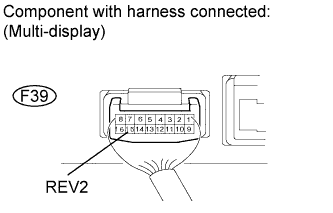
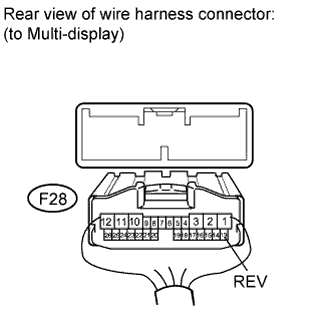
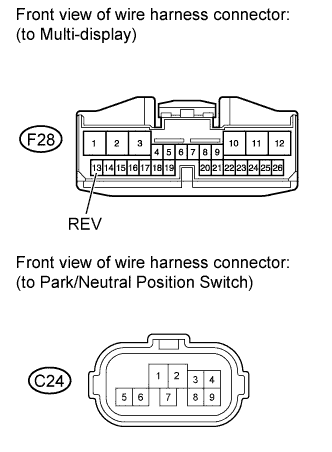

NAVIGATION SYSTEM > Reverse Signal Circuit |

| 1.CHECK REVERSE SIGNAL (DISPLAY CHECK MODE) |
 |
Enter the "Display Check" mode and select "Vehicle Signal Check" (Click here).
Check that the display changes between ON and OFF according to the shift lever operation.
| Shift Lever Position | Display |
| R | ON |
| Except R | OFF |
|
| ||||
| OK | |
| 2.CHECK HARNESS AND CONNECTOR (MULTI-DISPLAY - NAVIGATION ECU) |
 |
Disconnect the F30 display connector.
Disconnect the F32 ECU connector.
Measure the resistance according to the value(s) in the table below.
| Tester Connection | Condition | Specified Condition |
| F30-15 (REV2) - F32-20 (REV) | Always | Below 1 Ω |
| F30-15 (REV2) - Body ground | Always | 10 kΩ or higher |
|
| ||||
| OK | |
| 3.CHECK MULTI-DISPLAY |
 |
Measure the voltage according to the value(s) in the table below.
| Tester Connection | Condition | Specified Condition |
| F30-15 (REV2) - Body ground | Engine switch on (IG), shift lever moved to R | 11 to 14 V |
| F30-15 (REV2) - Body ground | Engine switch on (IG), shift lever moved to other than R | Below 1 V |
|
| ||||
| OK | ||
| ||
| 4.CHECK PARK/NEUTRAL POSITION SWITCH |
 |
Disconnect the F28 display connector.
Measure the voltage according to the value(s) in the table below.
| Tester Connection | Condition | Specified Condition |
| F28-13 (REV) - Body ground | Engine switch on (IG), shift lever moved to R | 11 to 14 V |
| F28-13 (REV) - Body ground | Engine switch on (IG), shift lever moved to other than R | Below 1 V |
|
| ||||
| OK | ||
| ||
| 5.CHECK HARNESS AND CONNECTOR (MULTI-DISPLAY - PARK/NEUTRAL POSITION SWITCH) |
 |
Disconnect the F28 display connector.
Disconnect the C24 position switch connector.
Measure the resistance according to the value(s) in the table below.
| Tester Connection | Condition | Specified Condition |
| F28-13 (REV) - C24-1 | Always | Below 1 Ω |
| F28-13 (REV) - Body ground | Always | 10 kΩ or higher |
| Result | Proceed to |
| OK (for A750F | A |
| OK (for AB60F) | B |
| NG | C |
|
| ||||
|
| ||||
| A | ||
| ||